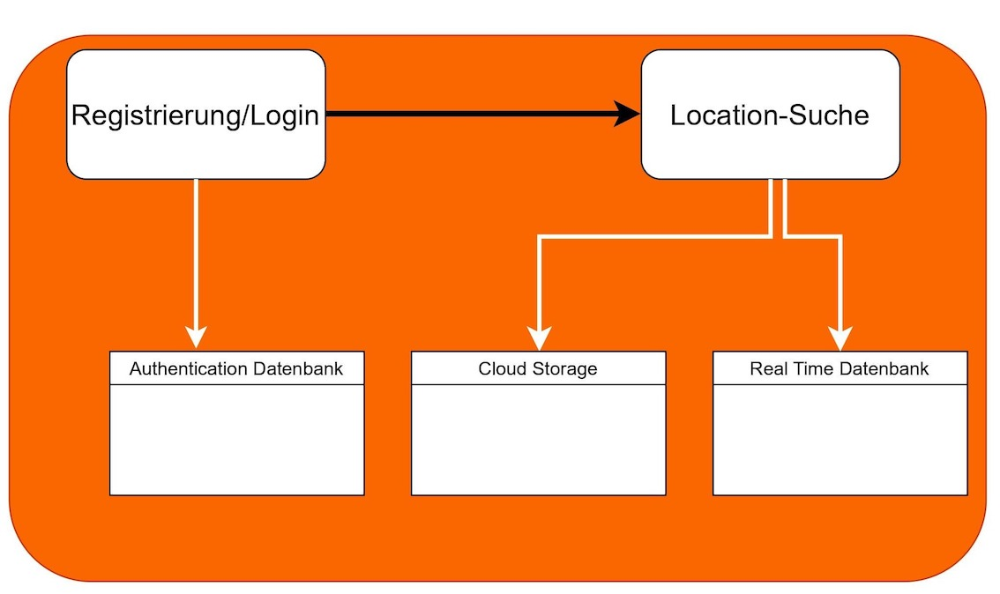

Die erste Phase begann am 1. Mai und bestand aus der Technologie-Spezifikation, z.B. Auswahl der geeigneten Datenbank und der zu verwendenden Funktionen. Es gab auch eine Designphase, in der die Benutzeroberfläche entworfen wurde, und eine Präsentation, bei der wir unser Projekt vorstellten. Am Ende der ersten Phase hatten wir bereits die Login- und Registrierungsfunktion (verbunden mit der Datenbank) und die Hauptseite implementiert. Für die Strukturierung unseres Projekts und die Dokumentation nutzten wir die Notion-Website. Weitere Details können hier eingesehen werden.

Die zweite Phase begann am 15. Juli. In dieser Phase wurde die Datenbank vollständig gefüllt, der Code für die Favoriten-Seite geschrieben, das Tagging-System für die Locationsuche implementiert und Pop-up-Fenster für jede Location erstellt. Außerdem wurde die Webseite mit der Dokumentation erstellt.